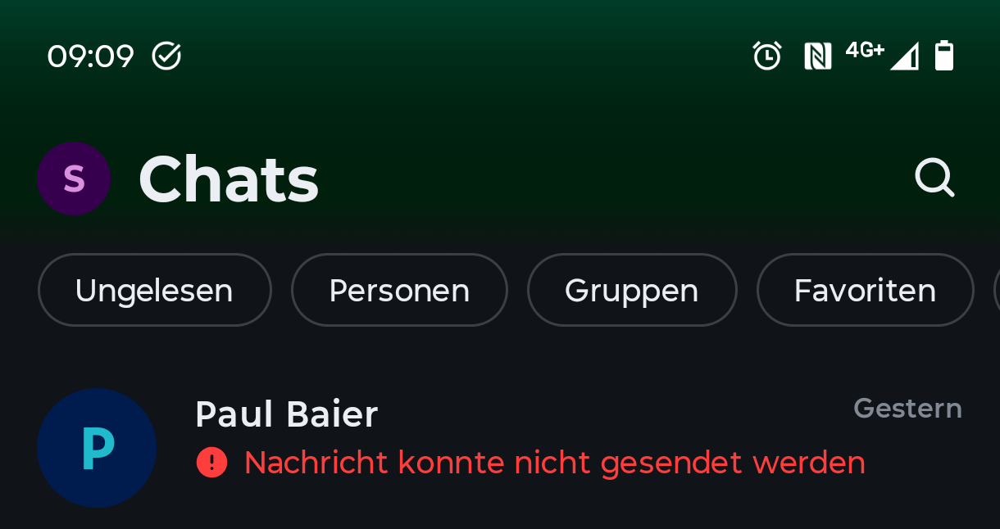
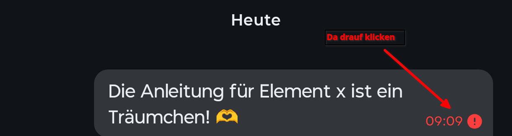
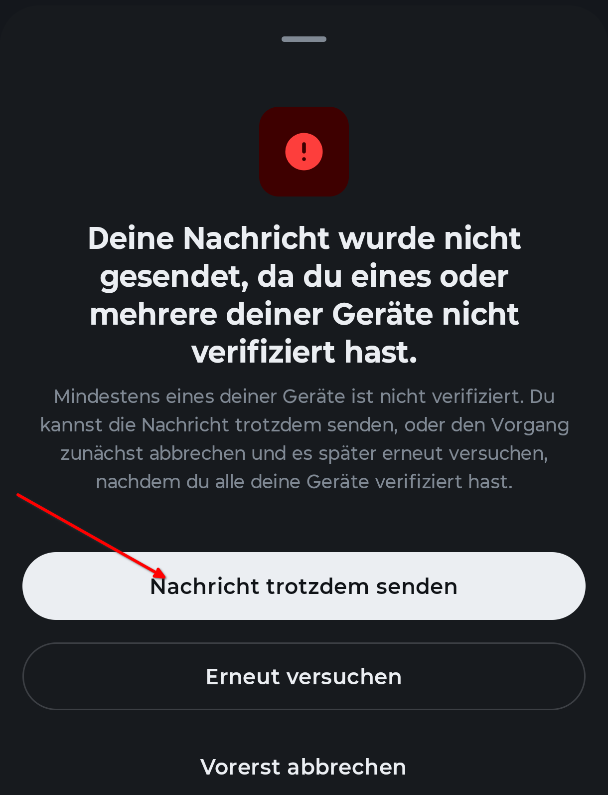
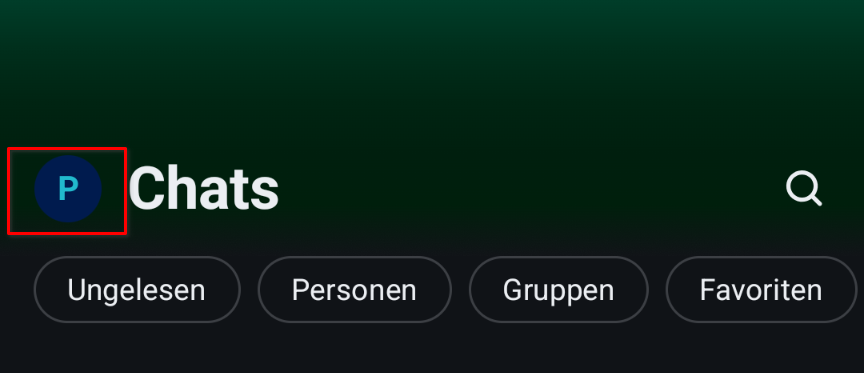
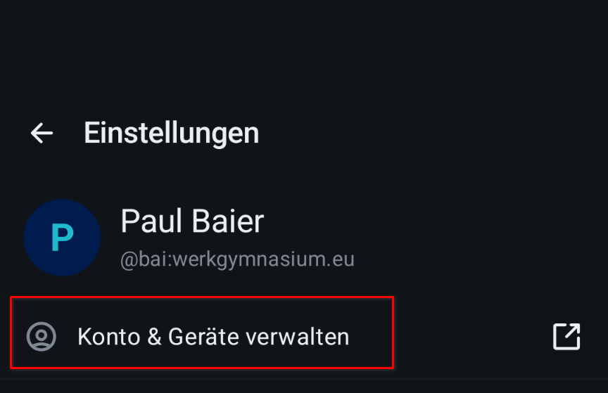
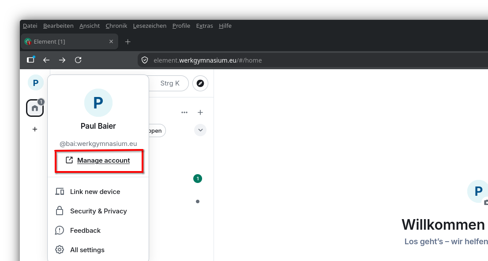
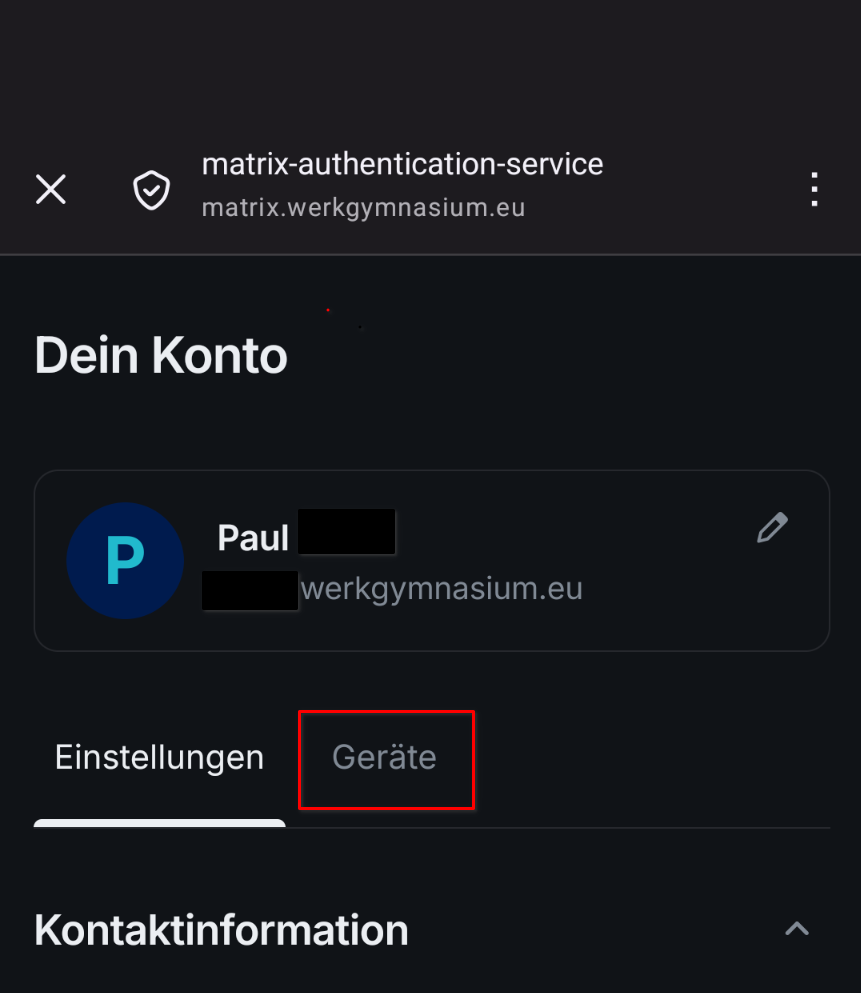
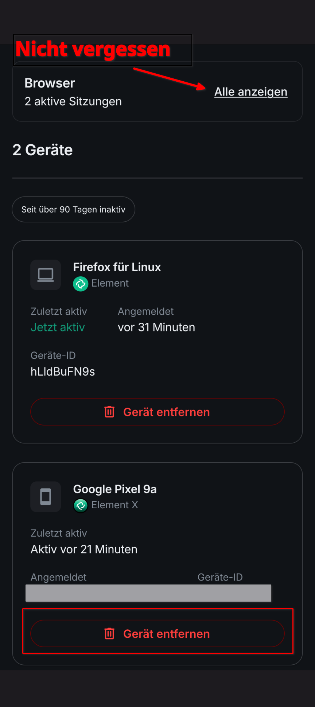
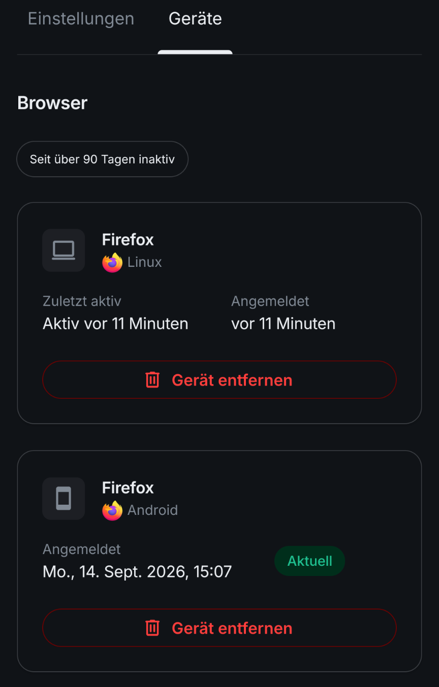

Sitzungen verifizieren
Jede Anmeldung — Handy, Browser, Tablet — legt eine eigene Sitzung an. Eine Sitzung, die nicht bestätigt wurde, gilt für Element als unbekannt, und darauf weist es hartnäckig hin.
Woran man es merkt
Es gibt drei Symptome des gleichen Problems:
- Die Nachricht geht nicht raus. Im chat erscheint: Einige Nachrichten konnten nicht gesendet werden.
- eine Warnung über „nicht verifizierte Sitzungen",
- Nachrichten, die als „Nicht entschlüsselbar" dastehen.
Dahinter steckt dreimal dasselbe: Es gibt eine Sitzung des eigenen Kontos, der noch niemand bestätigt hat, dass sie wirklich einem selbst gehört. Meist ist das keine fremde Person, sondern eine eigene alte Anmeldung — das Handy von vorletztem Jahr, ein Browser im Computerraum, eine App, die längst deinstalliert ist.
Die Bilder zeigen Element X
Im Browser und in SchildiChat Next sieht es etwas anders aus. Die Wörter sind dieselben, und der Weg unten gilt für alle drei.
Wenns schnell gehen muss



Alte Sitzungen entfernen
Die Liste der Anmeldungen steht nicht in Element selbst, sondern auf der Kontoseite. Sie ist für alle Geräte dieselbe: Vom Handy aus sieht man auch die Anmeldungen im Browser und umgekehrt.
Oben links auf das eigene Bild tippen, dann auf Konto & Geräte verwalten. Es öffnet sich ein Browserfenster.


Oben links auf das eigene Bild klicken, dann auf Manage account.

So oder so landet man auf derselben Seite: Dein Konto. Sie hat oben zwei Reiter — der rechte heißt Geräte und ist der, um den es geht. Dahinter steht oben ein Kasten Browser und darunter die Liste der einzelnen Geräte.



Dort steht jede Anmeldung mit Programm, Betriebssystem, dem Datum und einer Geräte-ID. Zwei Dinge helfen beim Sortieren:
- Die gerade benutzte Sitzung trägt ein grünes Aktuell — die bleibt.
- Man kann sehen, welche die Sitzungen sind, die sich schon länger nicht angemeldet haben.
Bitte nicht ausversehen alle Sitzungen abmelden
Die kürzlichen Sitzungen auf eurem aktuellen Handy müssen da bleiben. Wenn es die letzte angemeldete Sitzung ist und der Wiederherstellungsschlüssel fehlt, führt kein Weg mehr zu den alten Nachrichten zurück. Dann hilft nur ein Reset.
Was dabei verloren geht
Auf dem entfernten Gerät sind die Nachrichten weg. Das ist gewollt und genau der Zweck der Sache; auf allen anderen eigenen Geräten bleibt alles, wie es war.
Auf dieser Seite steht auch „Account löschen“
Im linken Reiter Einstellungen liegen weiter unten zwei rote Elemente direkt untereinander: Vom Konto abmelden und Account löschen. Das zweite ist endgültig und hat mit Sitzungen nichts zu tun. Wer hier arbeitet, bleibt im Reiter Geräte.
Eine nachträgliche Verifizierung ist nicht mehr möglich
Element verlangt inzwischen — anders als früher — dass alle Sitzungen schon bei der Anmeldung verifiziert werden. Alte unverifizierte Sitzungen kann man demnach getrost entfernen.
Wie die Verifizierung beim ersten Einrichten abläuft, steht in den Anleitungen selbst: Element X und im Browser. Nur diesen einen Rechner hier abmelden — etwa im Computerraum — geht schneller und steht dort.